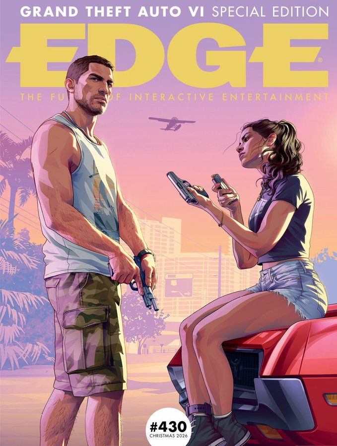

📸 Capa: Edge / Rockstar Games
EDIÇÃO 430
Edge
Reportagem de 16 páginas feita na sede da Rockstar North, em Edimburgo, com 90 minutos de gameplay jogados por Rob Nelson.
- Relacionamento: a relação de Jason e Lucia tem quatro níveis e muda conforme o tempo que passam juntos.
- Polícia: tapete de pregos, cão K9 e pistas como roupa, parceiro e câmeras.
- NPCs: pedestres com personalidade, que reagem ao jeito como você anda armado.
- Ritmo: dias e noites mais longos, para o mundo parecer mais crível.